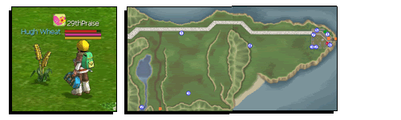
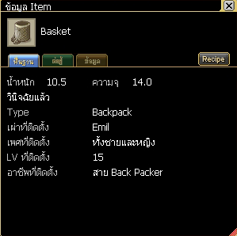

การทำตระกร้า ต้องใช้อุปกรณ์ดังนี้ ครับ
- Barley Spike 30 อัน
- Great Stap 1 อัน
- Greater Cloth 1 อัน
- Great Thread 1 อัน
- เงิน 4000 G
มาเตรียมวัตถุดิบ ที่ต้องใช้กันดีกว่า ครับ
1. ชิ้นแรก Bayley Spike 30 ชิ้น อันนี้จะหายากหน่อย สำหรับอาชีพ พ่อค้า อย่างเรา ๆ อาจจะให้เพื่อนที่เล่น ฟาร์มเมอร์ ช่วยหา ไม่ก็ รับซื้อ ที่แม็พเลยครับ วิธีการหาก็ตีต้น Huge Wheat ที่แม็พ Fareast Highway จะเยอะที่สุดครับ แล้วก็แม็พ Eastor Cape ก็จะมีอยู่บ้าง ครับ ตามรูป


2. ไปที่เมือง Northan City ไปที่ร้าน Tailor's Shop ตรงตำแหน่งวงกลมสีแดง ตามรูป ครับ

ของที่ต้องซื้อก็มี
•Great Thread 6 อัน อันละ 1300 * 6 = 7800 G ราคายังไม่ DC นะครับ
•Great Cloth 2 อัน อันละ 2800 *2 = 5600 G ราคายังไม่ DC นะครับ
•Needle 1 อัน 1000 G ราคายังไม่ DC นะครับ
3. หลังจากนั้น ก็มาที่ Uptown ร้านตัดเย็บ ตำแหน่งวงกลมสีแดง ตามรูปครับ

4. หลังจากนั้น จะเริ่มทำ Great Stap ก่อนครับ ตามรูป

อุปกรณ์ที่ใช้ ( ต้องใช้ความระมัดระวังอย่างสูงครับ เพราะรูปมันจะเหมือน ๆ กัน ต้องเอาเมาส์ ไปชี้ที่รูปด้วย เพื่อความชัวร์ว่าถูกต้อง ครับ )
• Great Thread 4 อัน
• เงิน 1000 G
5. ตามด้วยการทำ Greater Cloth ครับ ตามรูป

อุปกรณ์ที่ใช้
• Great Thread 1 อัน
• Great Cloth 2 อัน
• Needle 1 อัน
• เงิน 2000 G
6. หลังจากนั้นก็ ทำตระกร้าได้เลยครับ ตามรูป
อุปกรณ์ที่ใช้
• Barley Spike 30 อัน
• Great Stap 1 อัน
• Greater Cloth 1 อัน
• Great Thread 1 อัน
• เงิน 4000 G
7. ก็จะได้ ตระกร้า สมใจอยากละ ครับ ^^


8. รวมรายจ่าย การทำตระกร้า แบบ ไม่ DC แล้วก็ ไม่รวมรายจ่ายในการเดินทาง กับ รับซื้อก็ ...
• 7800 + 5600 + 1000 + 1000 + 2000 + 4000 = 21400 G
เป็นการทำ ที่ทรหด ดีจริง ๆ เลยครับ ><"